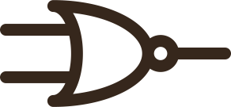

resistor transistor logic
A family of circuits that uses resistor and bipolar junction transistor to build logic gates.
Building blocks
RTL uses a few basic building blocks to create more complex circuits.
Two-inputs NOR gate

The most ubiquitous circuit in RTL is the two input NOR gate. It can be constructed using two NPN BJTs and three resistors.
Inverter

If only one input is used, the resulting gate is a simple inverter.
Other logic gates
By combining the two-input NOR gate and the inverter, all of the other logic gates can be built.